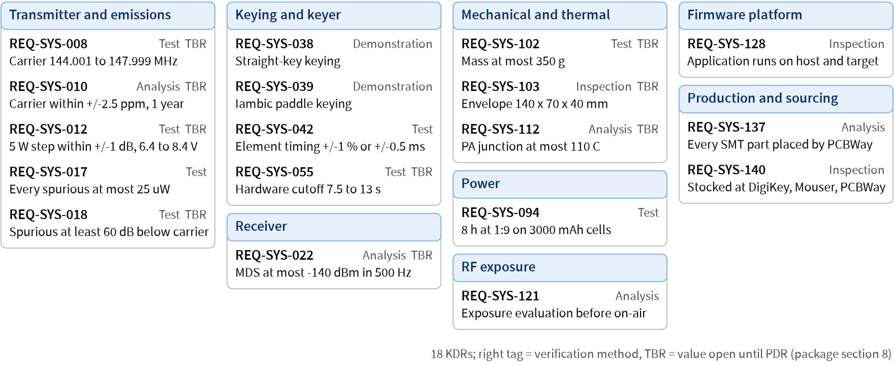
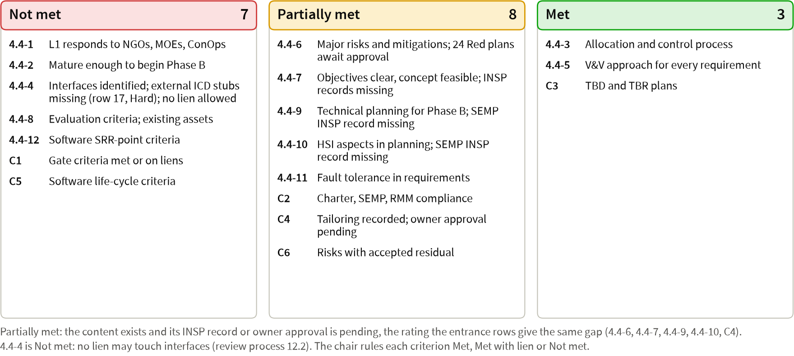

SRR readiness status and owner decisions (pre-review session)
cwht, SRR combined with MCR, package revision 3
Pocket 2 m true-CW (A1A) 5 W handheld transceiver, 144.000 to 148.000 MHz
Package docs/reviews/SRR/package.md, revision 3, dated 2026-09-25
Chair, Decision Authority, ETA and SMA TA: Robin. Presenter: Claude (lead systems engineer).
Pre-review session: the SRR gate review is not convened. Review process section 4.2 convenes it once the Hard rows of sections 3.2 and 4.3 are met; 17 items, H1 to H17, block the readiness declaration (package section 2).
The minutes record this session as a pre-review session, not as the gate review.
Agenda §1
| Block | Package items | Package sections | Slides | Chair decision needed |
|---|---|---|---|---|
Purpose, readiness, roles, entrance checklist, changes | 1 to 3 | §1 to §5 | 3 to 7 | Confirm the agenda (S1) |
Products and figures | 4 | §6, §7 | 8 to 13 | Questions, RIDs, RFAs |
Requirements and traceability | 5 | §8 | 14 to 16 | Questions, RIDs, RFAs |
Hazards and safety | 6 | §9 | 17 | Questions, RIDs, RFAs |
TPMs, risks, milestones | 7, 8 | §10 to §12 | 18 to 21 | Approve the Red risk plans |
TBR list and the 104 owner decisions | 9 | §13 | 22 to 35 | Accept TBR plans; rule decisions |
RFA/RID trend, candidate RIDs, software, tailoring | 10 to 13 | §14 to §19 | 36 to 40 | Adopt candidate RIDs; approve rows |
Success criteria, liens, disposition | 14, 15 | §20, §21 | 41, 42 | Rule the criteria |
Purpose, scope and disposition options §1; 01 §4.1, §12
Purpose: confirm that the functional and performance requirements respond to your NGOs, MOEs and ConOps, are achievable within the project’s means, that the concept is feasible, and that the plans are sufficient to begin preliminary design
Scope: SRR combined with MCR; the gate sets the functional baseline: NGOs, MOEs, ConOps, L1 requirements, SEMP
Judged against: review process section 4.4 (12 criteria) and the standing criteria C1 to C6
Dispositions: Approved; Approved with liens (each lien with owner, plan and due); Not approved (re-review in the same folder)
Never a lien: an unmet Hard entrance criterion, an open Major RID, a failing traceability report, a TBD in a product to be baselined
Readiness: the declaration is blocked §2, §3, §5
The presenter does not request a disposition at this revision (package section 21).
17 items, H1 to H17, block the declaration: Hard entrance shortfalls and items due before it (next two slides)
Traceability report of 2026-09-25: PASS for the rules the tool implements (0 violations, 0 warnings); by hand, T-18 lists 177 warnings and T-21 passes
validate_docs.pyexit 0; the risk check with--hazardsexits 1 on the HZ-015 back-linkAll are developer evidence: no tool has a TV record yet (H12), so S4, row 8 and row 24 rest on uncredited tool runs
Roles: Robin is chair, Decision Authority, ETA and SMA TA; Claude presents; no reviewer agent has run for this gate
Changes since the last review: none, first gate; revisions 2 and 3 corrected the package during assembly (package section 5)
Hard shortfalls, 1 of 2 §2
| Item | Shortfall | Closure path (owner) |
|---|---|---|
H1 | S3: no independent reviewer record; | Reviewer agents file the INSP records; Robin rules the findings |
H2 | Retirement of REQ-SYS-016 and REQ-SYS-123 rests on a review with no filed record | The L1 record carries both, or they are reverted before |
H3 | S11: deck written, rendered and inspected; not committed, not yet from the final package | Commit it (H17); re-render and re-inspect from the final package |
H4 | Row 1: stakeholders array added; T-21 tool rule missing; representation rule unconfirmed | Implement T-21 or keep the by-hand result; Robin confirms the rule |
H5 | Row 5: no concept-level trade study file ( | Claude writes the receiver and PA-topology trade; review |
H6 | Row 7: no | Preliminary allocation; T-18 in the tool; answer or RID each item |
H7 | Row 14: 17 hazard open questions due at SRR are Open | Reconcile |
H8 | Row 15: single point failure rows 3, 4 and 8 have no requirement | Robin rules decisions 38 to 40; Claude writes the requirements |
Hard shortfalls, 2 of 2 §2
| Item | Shortfall | Closure path (owner) |
|---|---|---|
H9 | S7: risk check with | Add RSK-034 to HZ-015; re-run; close or re-plan the steps |
H10 | S9: the nine deck figures have no controlled generator; ConOps T08 label detached | Generator into |
H11 | Row 17: none of the five external ICD stubs exists; template lacks the Security row | Add the template row; write the five stubs; review |
H12 | Row 20: toolchain proof not done; FW-B0 and | Run the lock checks; FW-B0 (Robin observes); file the nine TV records |
H13 | Row 22: 03 transcribes | Re-transcribe from 0.2.0-pha; file the concurrence |
H14 | Row 23: 07 section 14 differs from the hazard analysis; SWE-033 trade absent | Reconcile 07; write and review the make/buy trade |
H15 | Row 25: regulatory | Write both (decision 104 a), or Robin defers them (104 b) |
H16, H17 | Items due before the declaration; SRR products untracked, no commit hashes | Named authors fix; Robin authorizes the commits |
Entrance-criteria checklist §4

Project summary and binding owner decisions §6.1; SI log
| Area | Owner decision (stakeholder input) |
|---|---|
Radio | Pocket true-CW (A1A) handheld, full US 2 m band 144.000 to 148.000 MHz, 5 W (SI-001, 003, 004, 024) |
Growth | 2 m only in revision A; the path to 70 cm stays open (SI-002) |
Controller | Raspberry Pi Pico 2 with Rust on rustos; its micro-USB loads firmware and charges (SI-007, 022) |
Keying | Straight key and iambic paddle on 3.5 mm TRS; 5 to 50 WPM; semi break-in only (SI-018, 033, 034, 036) |
Power | Two 18650 cells in holders; battery life 8 h at 1:9 TX:RX (SI-023, 034) |
Build | PCBWay turnkey SMT, owner hand-solders through-hole; CNC aluminum via OpenSCAD and FreeCAD STEP (SI-008, 009, 031, 032) |
Sourcing | PA stocked at DigiKey, Mouser or PCBWay turnkey distributors; synthesizer by cost-performance trade (SI-028, 029) |
People, V&V | Every operator licensed; host-first verification, emulation never for timing; MIT (SI-030, 026, 025) |
Stakeholders, NGOs and MOEs §6.1
36 stakeholder inputs; 8 stakeholders; 30 NGOs (1 Need, 7 Goals, 22 Objectives); 13 MOEs; 28 constraints; all Draft
| Goal | MOEs that judge it, with the key success number |
|---|---|
NGO-002 Simplex CW range at 5 W | MOE-001 5.0 km open ground; MOE-002 30 km hilltop; MOE-010 weak signal beside a strong one |
NGO-003 Natural CW, either key | MOE-005 timing +/-1 % or +/-0.5 ms; MOE-008 Technician friend in 30 min; MOE-011 audio comfort |
NGO-004 Lawful and safe | MOE-006 spurious, 60 dBc target; MOE-009 exposure evaluation before on-air; MOE-012 no unintended key-down over 13 s |
NGO-005 Works at first power-on | MOE-003 bring-up stages 0 to 8 with no board respin |
NGO-006 Pocket, a day outdoors | MOE-004 8 h at 1:9; MOE-013 pocket carry (drafted, awaits OQ-SE-005) |
NGO-007 Buildable and open | MOE-007 delivered cost per unit within the approved budget |
NGO-008 Path to 70 cm | No MOE: judged by Inspection through its L1 requirements (NGO-030) |
ConOps: operating modes and scenarios §6.2, §7

Concept overview: block diagram §6.2, §7; concept §5

Concept feasibility: alternatives, trades, technology §4 rows 4 to 6, 20; §6.13
Feasibility argued block by block with research sources; no technology below TRL 6; toolchain proof not done (H12)
18 concept-level alternative sets dispositioned; six PDR trade studies defined: TS-001 selectivity, TS-002 synthesizer and reference, TS-003 PA device, TS-004 board thickness, TS-005 USB current, TS-006 ALC topology
Gap: no
TS-NNNfile exists, neither the concept-level trade (row 5) nor the SWE-033 make/buy trade (H5, H14)Ten descope options, ordered by value lost (row 6 Met)
Design maturity tracked apart from TRL: RF blocks at DML-4 by PDR and DML-5 by CDR
No RF breadboard before the procurement release: hardware TRL 3, a residual of RSK-008 (decision 11)
Products with evidence links and counts §6
No product has an independent reviewer record yet (S3), so every product is at "Preliminary" in repository terms.
| Product | Evidence | Counts |
|---|---|---|
Expectations (SE-35, SE-37) |
| 36 SI, 8 stakeholders, 30 NGO, 13 MOE, 28 CON |
ConOps and concept (SE-36) |
| 22 scenarios; B01 to B22; F1 to F10; 18 ICDs identified |
L1 requirements (SE-39), test cases |
| 179 REQ-SYS (177 Draft, 2 retired); 107 TC-SYS |
Hazard analysis (SWE-205) |
| 15 hazards; 17 SPF candidates; 24 open questions |
Risk register and plan |
| 59 risks (24 Red); 130 candidates dispositioned |
SEMP, HSI, CM, process 01 to 08 |
| App. J outline; HSI in SEMP 7.3.1 |
RMM and compliance matrix |
| 100 RMM rows; 62 compliance rows |
ADRs, TPMs, cost |
| 25 ADRs (3 Proposed); 20 MOPs, 20 TPMs; USD 970 to 1830 |
L1 requirements by functional group §8

Key driving requirements §8
Among the 177 non-retired: 18 KDR, 5 Goal, 154 Baseline; 82 rationales still read "Proposed, owner decision pending at SRR".

Verification planning and traceability report §6.4, §8
Traceability report: PASS for the rules the tool implements; 0 violations, 0 warnings, exit 0
Every non-retired requirement has an L0 parent, a method, a verification note and a same-method closing case
107 TC-SYS cases, all Draft: Bench 71, Simulation 25, Inspection 11; no verification report exists yet
Applied by hand: T-21 stakeholders passes; T-18 lists 177 of 177 unallocated (no
allocation.json)SWE-052 Table 1: rows 1, 5 and 6 enforced; row 2 in part; rows 3 and 4 not yet (no design or code)
Requirements volatility: not applicable until a baseline exists
Hazards and safety §9
15 hazards: initial High 5, Serious 8, Medium 2; residual Serious 3, Medium 5, Low 7
Every control verification case is Draft; no control is verified yet
Safety-critical software: keying, PA enable and sequencing, safe-state manager, charging, thermal, audio limiting, scheduler
Frequency control proposed safety-critical (decision 9)
17 SPF candidates; rows 1, 3, 4 and 8 need decisions 36 and 38 to 40
RF exposure evaluation is a PDR product
TPM status and margins §10

Risk matrix §11

Red risks ranked 1 to 8 §11
| Rank | Risk | L x C | First mitigation step (due) | Owner |
|---|---|---|---|---|
1 | RSK-007 Li-ion cell thermal event | 2 x 5 = 10 * | S1 hazard entry for the cells (SRR) | Claude |
2 | RSK-034 Burn or fire in hand assembly | 2 x 5 = 10 * | S1 HZ-015 control requirements (PDR) | Claude |
3 | RSK-008 First power-on fails; board respin | 4 x 5 = 20 | S1 design-for-debug guideline (PDR) | Claude |
4 | RSK-014 Procurement released unreviewed | 4 x 4 = 16 | S1 CDR readiness checklist (CDR) | Robin |
5 | RSK-002 LO error beyond 250 Hz | 4 x 4 = 16 | S1 frequency error budget (PDR) | Claude |
6 | RSK-001 PA oscillation or spurious | 3 x 4 = 12 | S1 PA device per SI-028 (PDR) | Claude |
7 | RSK-006 PA junction temperature at 5 W | 3 x 4 = 12 | S1 thermal budget (PDR) | Claude |
8 | RSK-011 Spurious not credibly measured | 3 x 4 = 12 | S1 close OQ-VV-001 (PDR) | Robin |
* Red by safety override. Ranks 9 to 24, all score 12: RSK-016, 017, 024, 026, 025, 003, 004, 047, 038, 005, 012, 027, 028, 029, 049, 058.
Milestones and procurement §12
| Milestone | Planned | Status | Recovery |
|---|---|---|---|
SRR package ready | 2026-09-26 morning | Assembled 2026-09-25; not ready (H1 to H17) | Reviewer runs, FW-B0, missing files; decision 104 |
PDR | 2026-09-26 evening | Pending | Six trade studies, L2 specifications, ICDs, V&V plan |
CDR and procurement release | 2026-09-27 evening and night | Pending; RSK-014 Red | Lien rule of RSK-014 S2 |
Vendor delivery, TRR | 2 to 4 weeks after the order | Pending; RSK-053 closure 2026-10-01 to 10-04 | Alternates in the BOM at CDR |
Procurement: no BOM line exists yet; the PCBWay questions are not sent (decision 101)
Stock seen on 2026-09-25: zero at DigiKey and Mouser for TPS62913, TPS7A2033 and BQ25792 (RSK-038, Red)
TBR list: owners and closure gates §13
TBDs in items to be baselined: 0. Every TBR has an owner, a closure plan and a close-by gate (S5 Met).
| TBR set | Count | Owner | Closure |
|---|---|---|---|
L1 requirement TBRs | 100 | Robin decides on Claude’s proposal; Claude produces the evidence | Ruling here where the plan says so, then the PDR analysis; close by PDR |
TPM TBRs: TPM-001, 002, 006, 014, 016 | 5 | Robin approves; Claude proposes | SRR or PDR memo; TPM-014 cost ceiling ruled at SRR (decision 90) |
Hazard-control TBRs (hazard analysis 3.6) | 17 | Claude; Robin where a ruling is named | PDR analyses; close by PDR |
Largest L1 groups: power 17, transmitter 16, receiver 16, mechanical 14, keying 11
Proposed lien L-1 carries the L1, hazard-control and four TPM TBRs to PDR; TPM-014 is ruled here, not carried
Owner decisions 1 to 8: governance, plans, tailoring §13.1
| No. | Theme | Decision | Recommendation | If no answer |
|---|---|---|---|---|
1 | A | Approve charter, process 01 to 08, SEMP, CM, risk, V&V and software plans | Approve once the S3 records exist and findings are ruled | Plans stay Draft; no functional baseline tag |
2 | A | HSI as SEMP section 7.3.1, not a stand-alone HSI Plan | Confirm; add the rationale to the charter row | As stated; charter row without rationale |
3 | A | Independent assessment by reviewer agents only, or an external reviewer | Accept as in SEMP section 4.1 | Accepted as stated |
4 | A | Deviation: SE-55, SE-56 not held; SE-51, SE-52 relief (ORR with SAR) | Approve | Rows stay proposed; memo line unsigned |
5 | A | SWE-017 wording: familiarization records, or briefs and reading lists | RMM wording; memos name the documents read | Each memo names the documents read |
6 | A | Approve | Approve both; RSK-010 carries the residual | RMM Draft; SWE-219 method missing blocks CDR |
7 | A | Cybersecurity relief (SWE-154, 156, 157, 159, 210); HMTA and CIO/SAISO roles | Approve both | Rows proposed; 03 record unsigned |
8 | A | As HMTA, accept the human safety risk of the SWE-022, 023, 219 tailoring | Accept, with RSK-010 and the hazard analysis | Not accepted; three T rows stay proposed |
Owner decisions 9 to 16: governance, safety, risk, CM §13.1
| No. | Theme | Decision | Recommendation | If no answer |
|---|---|---|---|---|
9 | A | Concur with Class A and the safety-critical set; is frequency control safety-critical? | Concur, with frequency control safety-critical | Mission-critical only; RSK-046 keeps SPF row 4 |
10 | A | Charter wording items (a) to (c) as a pre-baseline Log change | Approve (a) to (c) | Charter unchanged; Minor liens to PDR |
11 | A | Accept hardware TRL 3 at procurement release as RSK-008 residual | Accept now; reconfirm at CDR | RSK-008 stays Mitigate; asked again at CDR |
12 | A | Remove the untracked root | Remove | Claude deletes them before the declaration |
13 | A | Accept the TRL and DML method; no Technology Development Plan | Accept; rename the column DML-n | Method as written; G-3 5.8 stays NA |
14 | A | Approve the 24 Red risk plans; close RSK-009 on the recorded check | Approve all 24; close RSK-009 | No plan approval; the PDR risk check fails |
15 | A | Branch and tag protection on GitHub; SSH tag signing | Protection before | Plan and reflog check only; tags unsigned |
16 | A | Later CM choices: rustos pinning, large binaries, archive, rustos licence | Path dependency; commit binaries; MIT licence | CM plan defaults; licence gap stays open |
Owner decisions 17 to 24: operator model, power limits §13.1
| No. | Theme | Decision | Recommendation | If no answer |
|---|---|---|---|---|
17 | B | Operator model OPS-A, OPS-B or both; ADR-015 disposition | OPS-A default, OPS-B only by dated record; accept ADR-015 | OPS-A; ADR-015 Proposed; RSK-028 S2 open |
18 | B | OPS-B exposure tier: occupational basis, or 0.5 W and 1 W steps only | Keep 1 W for OPS-B until a dated record | OPS-B limited to 0.5 W and 1 W |
19 | B | Receive-only guest lock; release (a) two-step or (b) licensee credential | Include, option a | Option a; REQ-SYS-065 rationale restated |
20 | B | Guest keying under a present control operator at 0.5 W and 1 W, or listen only | Allow, restricted to 0.5 W and 1 W | Allowed as restricted; HZ-006 stays Medium |
21 | B | Automatic CW ID, message memories or a WinKeyer interface in revision A | Not in revision A; reminder only | Not provided |
22 | B | Power steps 0.5, 1, 2 and 5 W, each within +/-1 dB | Adopt | Adopted as TBR, closed at PDR |
23 | B | 1 W at first power-on and reset, with a confirmation for 5 W | 1 W default, confirmation press for 5 W | 1 W (TBR) as written |
24 | B | Maximum output: 5.0 W +/-1 dB (6.3 W ceiling), or a 6.0 W ceiling | 5.0 W +/-1 dB, ALC target +/-0.5 dB | REQ-SYS-012 as written (TBR) |
Owner decisions 25 to 32: regulatory limits, RF exposure §13.1
| No. | Theme | Decision | Recommendation | If no answer |
|---|---|---|---|---|
25 | B | ADR-023: (a) TCXO +/-2.5 ppm with a 1 kHz guard, or (b) a wider guard | (a); accept ADR-023 | (a) as TBR; ADR-023 Proposed |
26 | B | Full 144.000 to 148.000 MHz with presets, or a default lock to 144.000 to 144.300 MHz | Full band; presets 144.050, 144.100 MHz | Full band, presets per OPS-01 |
27 | B | Necessary bandwidth 208HA1A (K = 5) or 125HA1A (K = 3) | 208HA1A; 26 dB bandwidth of 350 Hz binds | 208HA1A |
28 | B | Envelope: 5 ms 10 to 90 % raised cosine, 3 to 8 ms; or 5 ms full Hann | REQ-SYS-014 as written | REQ-SYS-014 as written |
29 | B | ADR-022: 60 dB harmonic target with the LPF goals; name HZ-008 | Adopt; accept ADR-022 with HZ-008 | 60 dB as TBR; ADR-022 Proposed |
30 | B | Close REQ-SYS-001 by Inspection and 014, 015, 177 by Analysis | Accept; 015 to Test by CR if the tinySA RBW suffices | As written; RSK-011, RSK-045 carry residual |
31 | B | Posture P1 primary (antenna 20 cm away); P4 at the face off-nominal | Adopt | Adopted |
32 | B | SAR by analogy at 0.35 W/kg per W; accept RSK-030; FDTD estimate or not | Accept the analogy; no FDTD in revision A | Analogy accepted; RSK-030 asked again at PDR |
Owner decisions 33 to 40: RF exposure, stuck-key controls §13.1
| No. | Theme | Decision | Recommendation | If no answer |
|---|---|---|---|---|
33 | B | Exposure accumulator and posture line: convenience, not safety-critical | Convenience function | Convenience function |
34 | B | Enclosure legend engraved in the CNC job, or a printed label | Engrave | Engraved |
35 | B | Corpus gaps: 2.106 rows, KDB and SAR downloads, 150 to 174 MHz rows | Do all three before PDR | 2.106 rows stay Medium confidence |
36 | C | Tune and cutoff: (a) 0.5 W tune ending by 5.5 s, cutoff 7.5 to 13 s; (b) 10 s tune with the cutoff window moved above 11 s (MOE-012 bound re-derived) | (a) with the 74LVC1G123 | (a) as REQ-SYS-020 is written |
37 | C | Stuck-key limits: 5 s manual timeout; paddle watchdog 10 s, 30 s or no-gap form | 5 s with the Bug dah; no-gap watchdog, 2 s squeeze | As written; three OQ-SAF open as RIDs |
38 | C | Add a hardware transmission-length backstop, about 180 s | Adopt | Not adopted; SPF row 3 open |
39 | C | Add a hardware PA over-temperature cutoff near 95 C | Adopt | Not adopted; SPF row 8 open |
40 | C | Add an independent frequency check before and during transmit | Adopt | Not adopted; RSK-046 keeps SPF row 4 |
Owner decisions 41 to 48: safety controls, keyer §13.1
| No. | Theme | Decision | Recommendation | If no answer |
|---|---|---|---|---|
41 | C | Bench test-mode guard: forced 0.5 W, 120 s timeout, exit on reset | Adopt | REQ-SYS-179 without the forced step, timeout |
42 | C | Ratify the ConOps inhibit and latched classes, PRACTICE flag, bench limits | Ratify | ConOps 3.4 governs; ConOps items D1 to D6 raised as RIDs |
43 | D | Keyer modes: all five with Iambic A default, or Straight, Iambic A and B | All five, Iambic A default | All five, Iambic A default |
44 | D | Key type by menu only, or automatic mono-plug detection | Menu only in revision A | Menu only |
45 | D | Speed default and control; spoken-Morse speed announcement | 15 WPM; press-and-turn; no announcement | 15 WPM, speed in the menu |
46 | D | Sidetone 600 Hz locked to the receive offset, 300 to 1000 Hz; or 700 Hz | 600 Hz, locked, relative level | 600 Hz locked |
47 | D | Hang 8 dits default, 3 to 30 dits; constant lead-in of at most 12 ms | Adopt; update ADR-010 and ConOps | As written |
48 | D | Which keyer timing tunables the operator can change | Switchpoint and debounce only | Build-time defaults except those two |
Owner decisions 49 to 56: keyer, receiver §13.1
| No. | Theme | Decision | Recommendation | If no answer |
|---|---|---|---|---|
49 | D | Key input abuse -5 V to +12 V, ESD level 4; is a +24 V keying line needed? | Adopt; no +24 V line | Adopted as TBR |
50 | D | Ratify keyer timing, contact thresholds, 500 ms interlock, debounce, latencies | Ratify; debounce closes by bench capture | Values as written (TBR where marked) |
51 | D | Tell the key and headphone jacks apart by position, colour or engraving | Separate positions plus engraving | Same, at PDR with ICD-CTL-ME |
52 | D | Input sampling: 1 kHz TIMER0 polling, edge interrupts, or PIO | 1 kHz polling; interrupts only above 1 ms | Polling |
53 | E | Receiver family: superhet, internal transverter, direct conversion, commercial | Confirm the single-conversion superhet | Superhet confirmed |
54 | E | Carry selectivity candidates A and B to TS-001; adopt the TBR set | Carry both; adopt the set | Both carried; set as TBR |
55 | E | Front end: low-noise MMIC near 97 mA, or a lower-current stage | Lower-current stage (battery, RSK-058) | Scored in TS-001 |
56 | E | Synthesizer trade: USD 15 cost band, TX owns frequency generation, criteria | Confirm all three | As listed |
Owner decisions 57 to 64: receiver, transmitter, audio §13.1
| No. | Theme | Decision | Recommendation | If no answer |
|---|---|---|---|---|
57 | E | REQ-SYS-034 from 144.010 MHz, or full range with shielding; REQ-SYS-037 survives +27 dBm with a limiter, or +17 dBm | 144.010 MHz start; +27 dBm with a limiter | As written |
58 | F | PA set: PD54008L-E primary, GRF5604 fallback, 12.5 V reserve; drop list | Adopt as the TS-003 starting set | TS-003 carries the recommendation |
59 | F | ALC: gate-bias loop from the pack, or drive control, buck or clamp | Gate-bias loop; cutoff node in TS-006 | Gate-bias loop |
60 | F | SWR fold-back with a coupler, or device ruggedness alone | Decide at PDR once the device is known | Decided at PDR |
61 | F | HF3 relay, LPF after the T/R node; second receiver protection stage as a second shunt or a limiter | Relay, LPF after the T/R node, second protection stage per the fault analysis | As recommended |
62 | F | Ratify TX fault responses, 2:1 mismatch bounds, 8.60 V lockout, monitor port | Ratify | Values as written (TBR where marked) |
63 | G | Headphones only, or a speaker with class-D and a second hazard analysis | Headphones only | Headphones only |
64 | G | Audio level policy (a): 100 mVrms ceiling, 150 worst case, 30 mVrms cap | (a) | (a) as written |
Owner decisions 65 to 72: audio, power and charging §13.1
| No. | Theme | Decision | Recommendation | If no answer |
|---|---|---|---|---|
65 | G | Audio source: PWM with a DNP I2S footprint, an I2S DAC, or analog | PWM with the DNP footprint | PWM with the DNP footprint |
66 | G | No plug: amplifier off with indicator, or refuse to transmit; mono plugs under protection, series resistors, or TRS only | Shutdown with indicator, keyer live; accept TS plugs under protection pending RSK-039 S1 | As recommended |
67 | G | Weekly sound-dose accumulator, or the cap and unlock only | Cap and unlock only in revision A | Not implemented |
68 | G | Headphone amplifier: TPA6132A2, or capacitor-coupled with a digital pot | TPA6132A2 unless it fails the noise test | TPA6132A2 |
69 | G | Ratify receive mute, 5 to 20 ms restore fade, sidetone only with 1.5 m leads | Ratify | As written |
70 | H | Charger: TI BQ25887, MP2672A or BQ25792 | BQ25887 | BQ25887 as the PDR baseline |
71 | H | USB input: 500 mA always, 500 mA default with DCP to 1.5 A after TS-005, or an operator setting; USB 2.0 deviation | 500 mA default, DCP only after TS-005; accept the deviation, handbook note | 500 mA; deviation accepted |
72 | H | Pack protection: S-8252 plus BQ29209; add the 4.30 V layer and Kelvin sense | S-8252 plus BQ29209; add both | Same; OQ-SAF-008, 009 stay open |
Owner decisions 73 to 80: power, controls, antenna §13.1
| No. | Theme | Decision | Recommendation | If no answer |
|---|---|---|---|---|
73 | H | Cell holders: two Keystone 1043P, one dual holder, or a sled | Two 1043P | Two 1043P |
74 | H | 5 V synchronous buck with SYNC; mechanical power switch, or soft power | Buck with SYNC; mechanical switch | As recommended |
75 | H | While charging: receive with charge paused and hardware TX inhibit, concurrent receive and charge, or no operation | Receive allowed, charge paused, hardware transmit inhibit; record by ADR | As recommended |
76 | H | Floor 6 h at 1:4; 3.20 V TX inhibit, 3.00 V power-down, 60 C cell cutoff | Adopt | Adopted as TBR |
77 | I | Display Sharp LS013B7DH03 or another memory LCD format; no front light in build 1 | LS013B7DH03, no light in build 1 | As recommended |
78 | I | Two PEC11R encoders, two B3F buttons, printed knobs, SJ1-3535N jacks | Adopt all | Adopted |
79 | I | Ratify UI values: two knobs, 10 Hz to 10 kHz step, 4.0 mm digits, two levels | Ratify | Values as written (TBR where marked) |
80 | J | Antenna connector: stainless SMA jack retained by the boss, or BNC | SMA jack | SMA jack |
Owner decisions 81 to 88: antenna, enclosure, board, build §13.1
| No. | Theme | Decision | Recommendation | If no answer |
|---|---|---|---|---|
81 | J | Reference antennas and a radiated screen with the tinySA and a dipole | Adopt; correct concept 7.1 (quarter-wave) | Adopted |
82 | J | Install SPLAT! for MOE-001 and MOE-002 range analysis, or on-air only | Install before PDR | Range validated on air only |
83 | J | Enclosure: 6061 aluminium, bead blast, Type II anodize, masked contacts | Adopt | Adopted |
84 | J | OpenSCAD 2021.01 or the snapshot; H2C fit prints; SLA only if needed | Stay on 2021.01; H2C prints | 2021.01; H2C prints only |
85 | J | Environment: -10 to +45 C operate, 0 to 45 C charge, 1.0 m drop, IPX2 | Adopt (TBR); RSK-059 carries the residual | Adopted as TBR |
86 | K | Build quantity: five fabricated with three assembled, or five assembled | Keep three now; decide five at CDR | Three assembled, five fabricated |
87 | K | Board 1.0 or 1.6 mm, FR-4, Type VII via fill, panelization | 1.0 mm with four bosses, else 1.6 mm | As recommended, TBR |
88 | K | Full turnkey SMT; all SMT on the top side in the first build | Full turnkey; single side as L2 at PDR | Full turnkey |
Owner decisions 89 to 96: build, firmware, measures §13.1
| No. | Theme | Decision | Recommendation | If no answer |
|---|---|---|---|---|
89 | K | Functional test at PCBWay, or on the owner’s bench at TRR | Owner’s bench at TRR | Owner’s bench |
90 | K | Unit cost ceiling: USD 610 (TBR) per unit over three units | USD 610; instruments out of the unit budget | USD 610 (TBR); TPM-014 Yellow |
91 | K | Early buys at PDR: PA lifetime reserve, samples, filter, rail parts | Approve at PDR by ADR | No early buy; RSK-005, 038 stay Red |
92 | L | Emulator ACC-EMU-001: rp2350js pinned as a submodule, Renode fallback | Adopt all by the PDR ADR | Emulation uncredited until the ADR |
93 | L | Rules: single core, one NVIC priority, PWM slices 0 to 7, GPIO via SIO | Adopt by ADR; register trait at PDR | As the concept states |
94 | L | Tools: LTspice and ngspice, cargo-llvm-cov, lizard, cargo-geiger installs | Adopt and approve the installs | Not installed; gates G3, G4 cannot run |
95 | L | RP2350 secure boot with signed images, or the CRC-32 image check | Decide at PDR (RSK-015, RSK-022) | CRC-32 image check only |
96 | M | Add MOE-013 pocket carry; re-parent MOP-001 and MOP-002 | Add and re-parent | MOPs stay on MOE-001 with a caveat |
Owner decisions 97 to 104: measures, owner actions, added §13.1
| No. | Theme | Decision | Recommendation | If no answer |
|---|---|---|---|---|
97 | M | Mass 350 g and envelope 140 x 70 x 40 mm as TBR allocations | Adopt as TBR; estimates by PDR | Provisional; no estimate at SRR |
98 | M | Re-allocate TPM-002 (receive about 1.5 W); TPM-019, TPM-013; 70 cm-ready | Approve with the PDR TPM definitions | TPM-002 stays Red |
99 | N | Instruments: calipers, scale, meter, thermocouple, tinySA, attenuator, Pico 2 | Confirm or buy before PDR; tinySA by TRR | Measurement cases stay Blocked |
100 | N | Hand-assembly bench: station with stand and auto-sleep, fume extractor | As listed; alloy in the handbook | HZ-015 Serious; RSK-034 Red |
101 | N | PCBWay questions and quotes; filter quotes; Guerrilla RF; ST PA files | Do all before PDR | Assumptions open; trades on published data |
102 | N | Bench VBUS test at 0.5 to 1.5 A; PCM1808 breakout; mirror fork; stock checks | Do before PDR | TS-005 cannot raise the limit |
103 | O | Stakeholder identifiers: keep the name keys, or add STK-NNN | Keep the name keys | Name keys kept; CI-10 closes |
104 | O |
| (a) | Row 25 and SWE-050 stay Not met |
RFA/RID trend, process and candidate RIDs §14, §15; 01 §10
Prior trend: no prior review; the SRR log is empty; TPM-003 Green (0 raised, 0 open, 0 overdue)
RID: a defect in a product; Major blocks the baseline, Minor is fixed before the next gate
RFA: a question, analysis or plan; Blocking closes before the memo, Routine may be a lien
Raised by Robin at any slide; logged as RFA-SRR-NNN or RID-SRR-NNN, and in the minutes against the slide
No reviewer record exists, so no finding awaits adoption
21 discrepancies offered as candidate RIDs (next two slides): items 5 and 9 Major; item 10 Major for D3 to D7 and D10; item 7 ruled by decision 37, then a RID; item 4 fixed; the rest Minor
Candidate RIDs 1 to 11 §15, §20.1
| No. | Discrepancy (short) | Product | Proposed handling | Lien or H item |
|---|---|---|---|---|
1 | HZ-015 lacks the RSK-034 back-link, so the |
| Minor RID | H9 |
2 | TPM-002 receive allocation 0.5 W; the research budget is 1.44 W |
| Minor RID; decision 98 | L-4 |
3 | tinySA receipt "by ADR", not by the charter’s receipt report and TV record |
| Minor RID, editorial | L-4 |
4 | No | expectations | Fixed in revision 2 | none |
5 | 03 transcribes | 03 | Major RID | H13 |
6 | Concept 7.1 calls the quarter-wave Signal Stick a half-wave | concept | Minor RID | L-4 |
7 | REQ-SYS-054 states 10 s; research and ConOps 30 s; HZ-004 K4 no-gap | REQ-SYS-054 | Decision 37, then a RID | H6 (D5), H7 |
8 | Review-trend plot overlaps its date labels for an empty log |
| Minor RID (tool) | L-4 |
9 | 07 sections 14.1 and 14.2 differ from the hazard analysis | 07 | Major RID | H14 |
10 | ConOps appendix D items D1 to D17 open against the products | ConOps D targets | One RID each: Major D3 to D7, D10; Minor the rest | H6 (Major); L-4 (Minor) |
11 | 04 alignment items A3 and A4 open |
| Minor RIDs | L-4 |
Candidate RIDs 12 to 21 §15, §20.1
| No. | Discrepancy (short) | Product | Proposed handling | Lien or H item |
|---|---|---|---|---|
12 | Technology assessment cited under | 01, SEMP | Minor RID, editorial | L-4 |
13 | SEMP says USB-C; SI-022 is the Pico 2 micro-USB | SEMP 3.1 | Minor RID, editorial | L-4 |
14 | SEMP HSI row states a 10 s tune; REQ-SYS-020 at most 5.5 s | SEMP 7.3.1 | Minor RID, with decision 36 | L-4 |
15 | Concept: 10 s tune and 30 s watchdog; the L1 set 5.5 s and 10 s | concept | Minor RIDs, with decisions 36 and 37 | L-4 |
16 | ConOps modes figure: T08 label detached from its edge |
| Minor RID | H10 |
17 | OQ-SAF statuses stale: 004 and 011 answered, six partly |
| Minor RID | H7 |
18 | HZ-001 K2 and HZ-006 K2 still quote a 10 s tune |
| Minor RID, with item 17 | H6 |
19 | ADR-022 reads "Hazards in play: none" though it is HZ-008 K1 | ADR-022 | Minor RID, before decision 29 | H7 |
20 | 02 section 14 statuses stale | 02 | Minor RID, editorial | L-4 |
21 |
|
| Minor RID (tool) | L-4 |
Software status §16, §18
| SWE | Product | Status |
|---|---|---|
020, 176 | Classification (Class A elected) and concurrence | Partial: 03 stale; concurrence missing |
205, 125, 139 | Safety-critical determination; RMM 100 rows (FC 75, T 17, NA 8) | Done; approval pending (decisions 6, 9) |
033 | Make/buy trade: rustos against rp-hal, Embassy, RTIC | Not met: no trade study |
050 | Software L1 requirements; SW-KEYER file | Not met: file absent (decision 104) |
136 | Tool list, sanity checks, TV records | Not met: nine TV records absent |
087 to 089 | Peer reviews of the L1 set and plans; measurements | Open: no record, no measurements file |
013 | Software plans (preliminary) with the security section | Done (content); 07 section 14 reconciliation open (H14) |
037, 079, 081, 086, 052 | Milestones, CM, software risks, traceability | Done; SWE-034 acceptance Partial |
NPR 7123.1D | Compliance matrix, 62 rows: FC 49, T 4, NA 9 | Checks pass; T and NA rows for approval |
Proposed tailoring §17
| Rows | Proposed | Basis (abridged from the matrices) |
|---|---|---|
IV&V: SWE-141, 131, 178, 179 | NA | Not a Category 1 or 2 project; no IV&V facility; independence by separate agents |
Institutional: SWE-174, 032, 147, 148 | NA | Center repository, CMMI organization and NASA ownership do not exist |
Cost, schedule: SWE-015, 151, 016, 018, 046 | T | Hardware realization cost model; event-based milestones, no calendar |
Assurance, training: SWE-022, 023, 017 | T | NASA-STD-8739.8 not in the corpus; SWEHB tabs; briefs replace training |
Coverage: SWE-219, 211 | T | No Rust MC/DC tool (RSK-010); Rust core tested at feature level |
Cybersecurity: SWE-154, 156, 157, 159, 210 | T | No network interface; scoped to USB, SWD, configuration, key input |
Other: SWE-027, 143 | T | MIT licence review instead of IP counsel; architecture review within PDR |
NPR 7123.1D: SE-24 to 31, SE-44; SE-51, 52, 55, 56 | NA; T | No contracts; program-only row; ORR with SAR; DR and DRR not held |
Success criteria self-assessment §20

Requested disposition and proposed liens §20.1, §21
Requested now: no disposition, because the gate review is not convened and the readiness declaration is blocked. When H1 to H17 close, the requested disposition is Approved with liens L-1 to L-5.
| Lien | Shortfall and closure plan | Due |
|---|---|---|
L-1 | 100 L1, 4 TPM and 17 hazard-control TBRs; each closes by its own plan; TPM-014 is ruled here (decision 90) | PDR |
L-2 | S8: TPM-001 and TPM-016 have no estimate; bottom-up estimates in | PDR readiness declaration |
L-3 | S10: | PDR readiness declaration |
L-4 | Minor discrepancies 2, 3, 6, 8, 11 to 15, 20, 21 and the Minor ConOps D items of 10, if adopted as Minor RIDs | PDR readiness declaration |
L-5 | Cross-document items due at PDR (03 X9, X10; 04 A11; SEMP F-06, F-15; OQ-SAF questions marked PDR) | PDR readiness declaration |